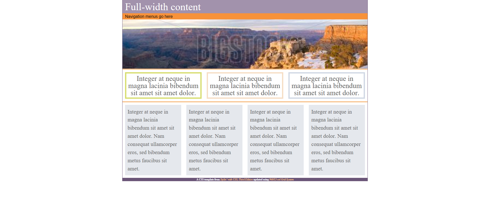
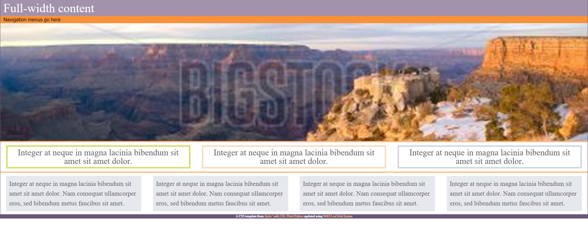

Client Information
This is an exercise that I have yet to do for my BIT 168 class at Cascadia College.
This is an exercise that I have yet to do for my BIT 168 class at Cascadia College.
Here are some screen shots of the website for you to look at if you just want a quick look over of the site. If you want a more in depth look at the site you can find it here.
Assignment 7 Styling Gird Assignment 7 Styling flex Gird  